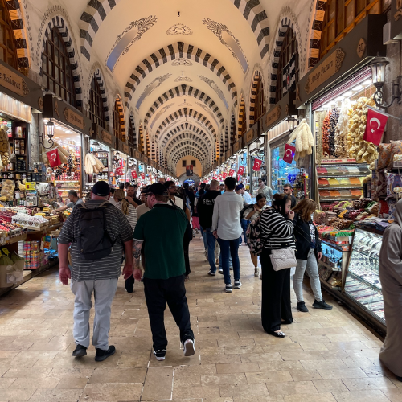
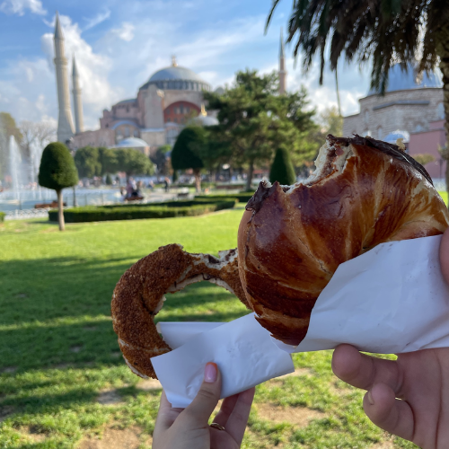
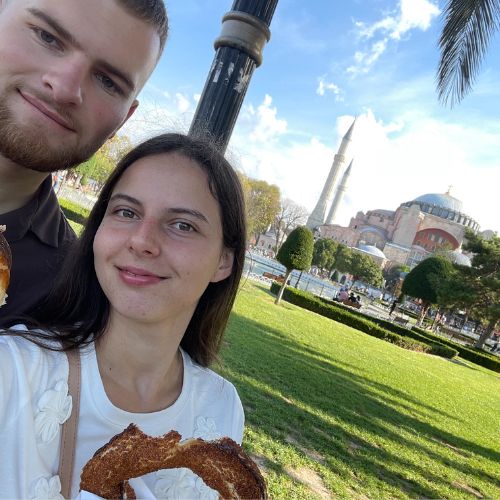
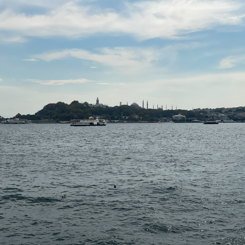
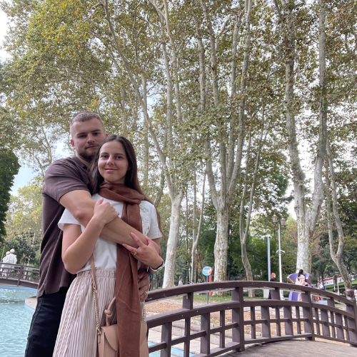
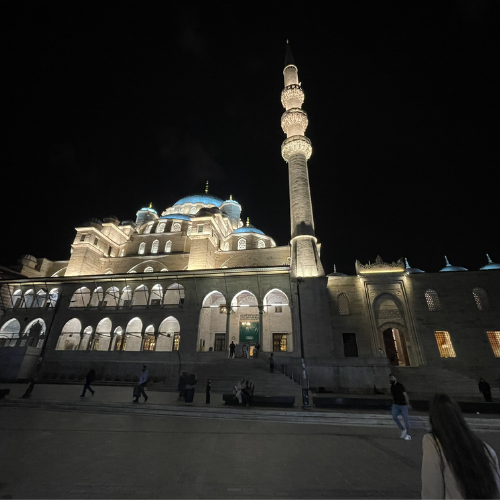
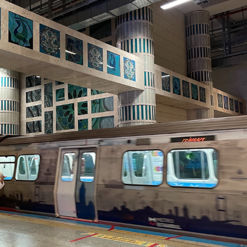

🕌 Istanbul: Dobrodružstvo medzi dvoma kontinentmi
"Sú mestá, ktoré navštíviš. A potom sú mestá, ktoré ťa pohltia. Istanbul je presne taký. Mesto, kde sa Európa stretáva s Áziou. Kde sa minulosť prelína s prítomnosťou a kde každý krok znie ozvenou histórie. Je chaotický, hlučný, voňavý, intenzívny – a práve preto nezabudnuteľný."
🌅 Ráno nad Bosporom – keď sa mesto prebúdza
 Zobudiť sa skoro ráno v Istanbule má svoje čaro.
Ticho pred ruchom. Mäkké svetlo nad Bosporom. A prvé výzvy muezínov, ktoré sa nesú ponad strechy mesta.
V tom momente si uvedomíš, že toto nie je obyčajné európske mesto. Je to brána medzi svetmi.
🕌 Hagia Sophia – dotyk histórie
Hagia Sophia nie je len budova. Je to príbeh tisícročí.
Keď vstúpiš dnu, cítiš chlad kameňa, tlmené svetlo a obrovský priestor nad hlavou. Byzantská bazilika, osmanská mešita, múzeum – dnes opäť mešita. Každá vrstva histórie tu zanechala svoju stopu.
Je to miesto, kde sa cítiš malý. A zároveň fascinovaný.
🌊 Plavba po Bospore – hranica medzi kontinentmi
 Sadnúť si na loď a sledovať panorámu mesta z vody je úplne iný zážitok. Na jednej strane Európa. Na druhej Ázia.
Paláce, mešity, moderné mosty a rybári na brehoch. Istanbul z vody pôsobí majestátne a pokojne – akoby sa na chvíľu zastavil jeho nekonečný ruch.
Tip: Choď na lokálnu verejnú loď namiesto turistickej plavby. Je lacnejšia a autentickejšia.
🌇 Západ slnka nad Modrou mešitou
 Keď sa obloha zafarbí do oranžova a silueta minaretov sa začne črtať proti zapadajúcemu slnku, Istanbul ukáže svoju najkrajšiu tvár.
V tom momente sa zastavíš.Dýchaš.A len sleduješ.
Mesto sultánov, obchodníkov a cestovateľov žije ďalej – ale ty máš pocit, že čas sa na chvíľu spomalil.